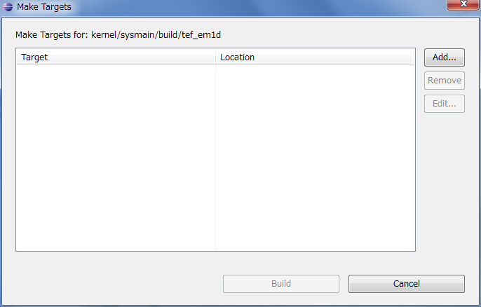
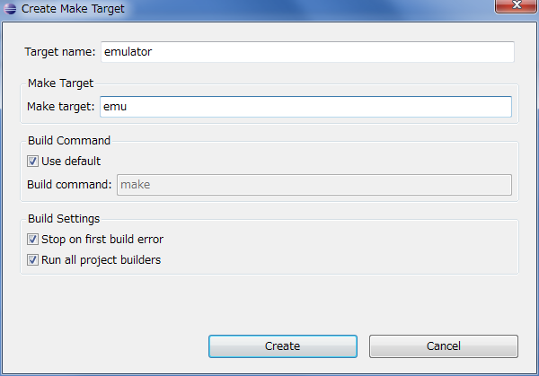

Click with the mouse to select the target "build directory" which is displayed in the "C/C++ Projects" view shown in the left pane of the Eclipse window.
With the directory selected, click the "Project" menu on the toolbar and select the following displayed items to start the build.
"T-Engine Target Make all"
Run "make all" to create the object.
"T-Engine Target Make Clean"
Run "make clean" to clear the created object. Run Make all after running Make clean to completely redo the make process.
"T-Engine Target Make..."
When the "Make Targets" dialog is displayed, select the target and press the "Build" button to run "make <selected target>".
If the target you wish to run is not displayed, press the "Add" button within the dialog and add the settings for "Target name" and "Make Targets".
Messages are sequentially displayed in the "Console" view when the build starts. When the following message is displayed, the build has finished.
**** Build Finished ****Selecting and right-clicking the "build directory" displays the "Make Targets" item, but you cannot run "Build" from here. Be sure to select "T-Engine Target Make..." from the "Project" menu on the toolbar.
Build the T-Kernel system with the following procedure.
(1) Select the following directory as the build directory.
kernel\sysmain\build\tef_em1d(2) Select "Project" -> "T-Engine Target Make...", then select "emulator" as the target, and press the "Build" button. Press the "Add" button to add the target if it is not displayed.
Target Name emulator (any name is OK)
Make target emu 
(3) When the following message is displayed in the "Console" view, the build is finished.
(4) The following build result is created in the build directory.
RAM for execution (for debugging)
kernel-ram.sys RAM version T-Kernel execution object
kernel-ram.map RAM version T-Kernel link map
kernel-ram.mot RAM version T-Kernel load image (S-Format)
kernel-ram.bin RAM version T-Kernel load image (Binary)
rom-dbg.bin Emulator use RAM version load image (Binary)
( T-Monitor + RomInfo )ROM for execution (for writing to Flash ROM)
kernel-rom.rom ROM version T-Kernel execution object
kernel-rom.map ROM version T-Kernel link map
kernel-rom.mot ROM version load image (S-Format)
rom.bin Emulator use ROM version load image (Binary)
( T-Monitor + RomInfo + T-Kernel )The build result described above and the following files for writing to Flash ROM are copied to the folder "C:\cygwin\usr\local\tef_em1d\tkernel_source\bin\tef_em1d".
rominfo-ram.mot RAM version RomInfo load image (S-Format)
rominfo-rom.mot ROM version RomInfo load image (S-Format)
tmonitor.mot T-Monitor load image (S-Format)
tmonitor.map T-Monitor link mapThe execution object with the attached debug information must be created when using a debugger (gdb) with Eclipse.
For this reason, copy the build directory's "tef_em1d" directory and create the directory "tef_em1d.debug" using the following procedure.
(1) Move the mouse over the "tef_em1d" directory which is displayed in the "C/C++ Projects" view shown in the left pane of the Eclipse window and right-click the mouse to select "Copy" from the displayed menu.
(2) To continue, move the mouse to the "build" directory above the "tef_em1d" directory, and right-click the mouse to select "Paste" from the displayed menu.
(3) Set the new name to "tef_em1d.debug" and press the "OK" button.
(4) Set the "tef_em1d.debug" which was created as the build directory and run the system build procedure.
Be sure to select "T-Engine Target Make Clean" to clear the build result before running the "tef_em1d" make process.
The "C:\cygwin\usr\local\tef_em1d\tkernel_source\bin\tef_em1d" folder contains the last build result of either "tef_em1d" or "tef_em1d.debug". Please note that the object file names are the same, so you cannot tell the difference from the file names.
The following "Make Targets" are prepared for running "T-Engine Target Make..." in the "tef_em1d" build directory, so set and use the appropriate "Make Targets" as needed.
<Module>
Run the particular make for the specified <module>.
| Module make | Execution Directory |
|---|---|
| tkernel | kernel/tkernel/build/<Model Name> |
| sysmgr | kernel/sysmgr/build/<Model Name> |
| sysinit | kernel/sysinit/build/<Model Name> |
| libraries | lib/build/<Model Name> |
| drivers | driver/<Model Name>/build |
| config | config/build/<Model Name> |
| monitor | monitor/build/<Model Name> |
all - "T-Engine Target Make all"
Run make for the following modules to create the kernel object.
tkernel, sysmgr, sysinit, libraries, drivers
emu
Run make for the following modules to create the emulator execution image.
all (tkernel, sysmgr, sysinit, libraries, drivers) + config, monitor
clean - "T-Engine Target Make Clean"
Run make clean for the following modules to clear objects created with make (make all). (config and monitor module objects are not cleared.)
tkernel, sysmgr, sysinit, libraries, drivers
source
Run make source for the following modules to create the source and definition files for the system call/extended SVC interface library. (Source and definition files are created with the typical make.)
libraries, drivers
clean_source
Run make clean_source for the following modules to clear the source and definition files created by make source.
libraries, drivers
clean_all
Run both make clean and make clean_source.
clean_config
Run make clean for the config module to clear the RomInfo object.
clean_monitor
Run make clean for the monitor module to clear the T-Monitor object.
The system build creates an object file which contains all of the device drivers, but to exclude unnecessary device drivers, edit the "Makefile" in the "tef_em1d" build directory, and delete unnecessary drivers from the following definitions.
DRV_CONSOLE = yes
DRV_CLOCK = yes
DRV_SYSDISK = yes
DRV_SCREEN = yes
DRV_KBPD = yes
DRV_LOWKBPD = yesSample code for debugging is also contained in "kernel\sysmain\src\usermain.c". To disable this, delete the following definition.
CFLAGS += -DDEBUG_SAMPLE